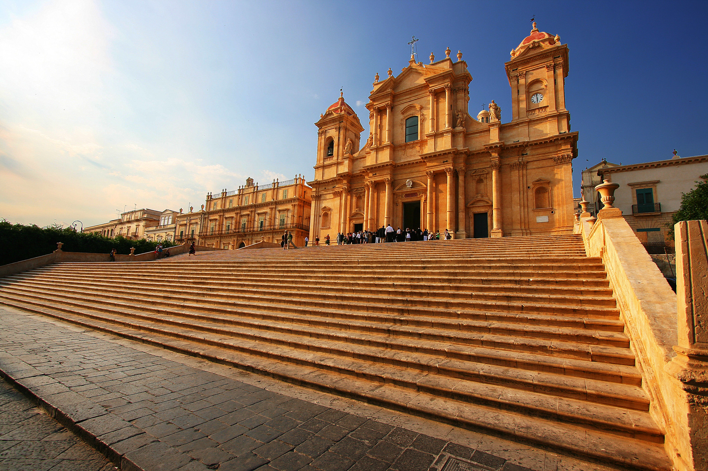
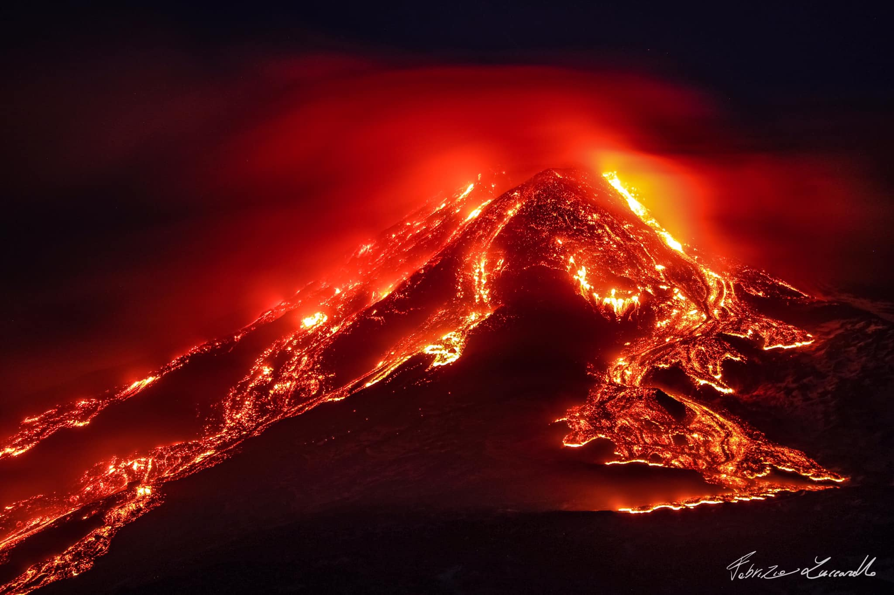

La Sicilia è un mosaico di culture, colori e sapori nel cuore del Mediterraneo. Essa è 'isola più grande d'Italia e vanta una storia millenaria che ha visto il passaggio di Sicani, Greci, Romani, Arabi, Normanni e Spagnoli. Il viaggio non può che partire da Palermo, cuore pulsante dell'isola. Tra i vicoli dei mercati storici e lo splendore dei mosaici arabo-normanni, la città conserva intatto il prestigio di una capitale che ha ospitato re e imperatori. Spostandosi verso l'estremità occidentale si raggiunge Trapani, la "città dei due mari" e del sale; da qui lo sguardo spazia verso le isole Egadi, mentre alle spalle svetta il borgo medievale di Erice, perennemente avvolto dal fascino delle nuvole. Lungo la costa meridionale, il paesaggio cede il passo alla magnificenza della Magna Grecia. Agrigento incanta con la sua Valle dei Templi, dove il tufo dorato si accende di sfumature calde a ogni tramonto.

Addentrandosi nel cuore geografico dell'isola, si incontrano Caltanissetta ed Enna; quest'ultima, nota come il "Belvedere di Sicilia", offre panorami sconfinati e un'atmosfera di quiete che contrasta con il dinamismo delle zone costiere.

Proseguendo verso il sud-est, lo scenario muta nel trionfo del Barocco e del mito. Ragusa e Siracusa ne sono le custodi: passeggiare tra le scalinate di Ibla o tra le pietre millenarie di Ortigia regala la sensazione di trovarsi in un set cinematografico senza tempo.
Risalendo la costa orientale si incontra Catania, una città forgiata dalla lava che pulsa di energia all'ombra del maestoso vulcano Etna. Il viaggio si conclude infine a Messina, che con il suo celebre Stretto funge da eterno ponte culturale e geografico verso il resto d'Europa.
